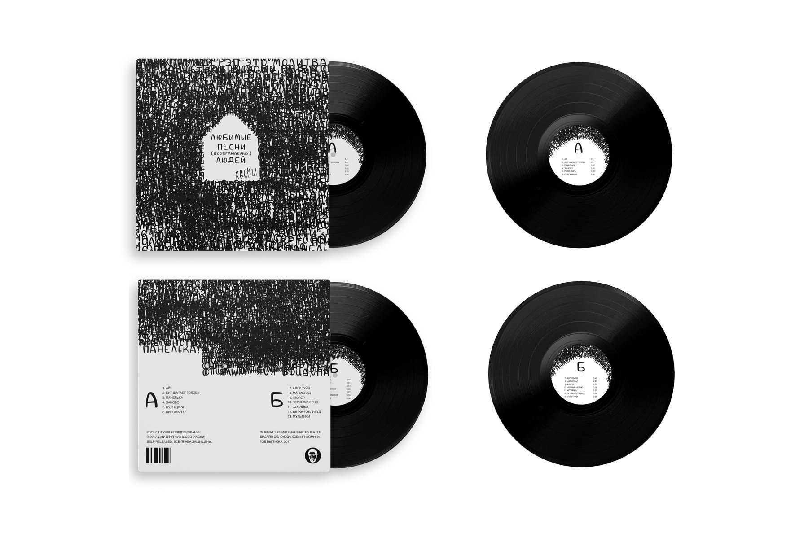
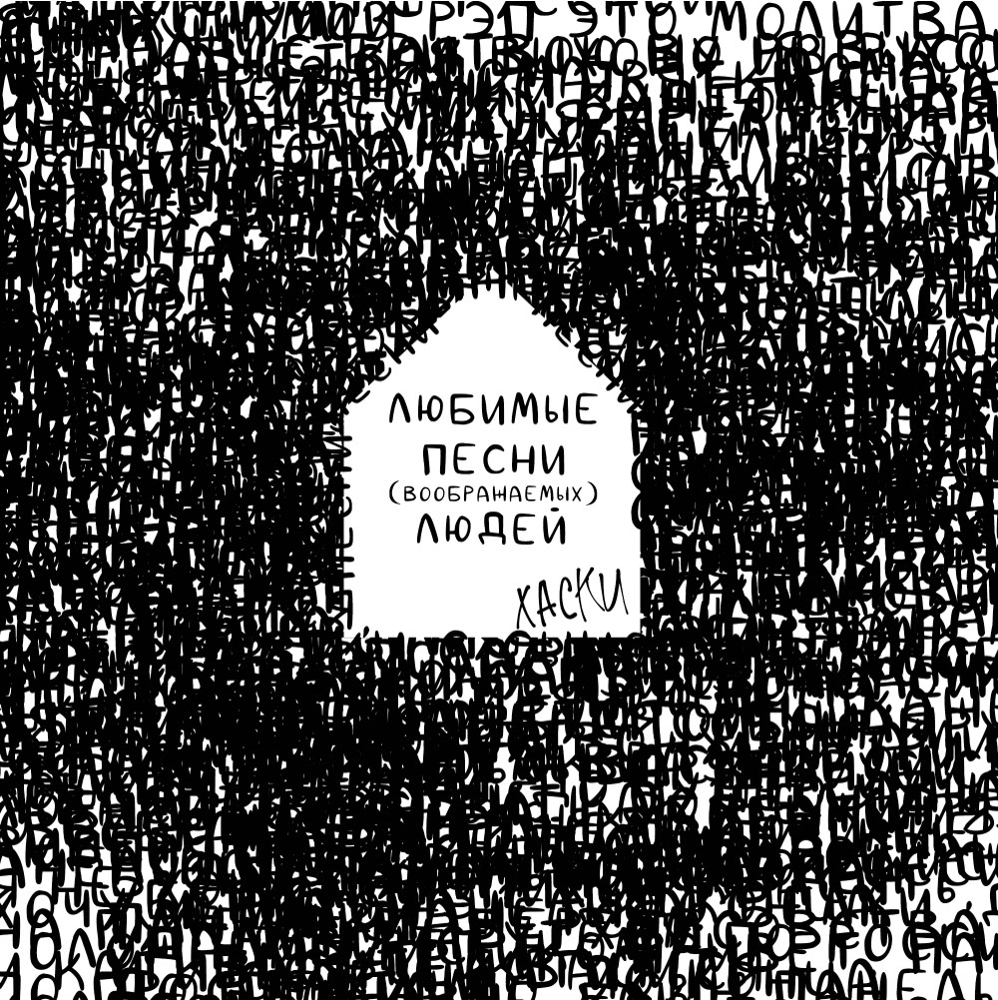
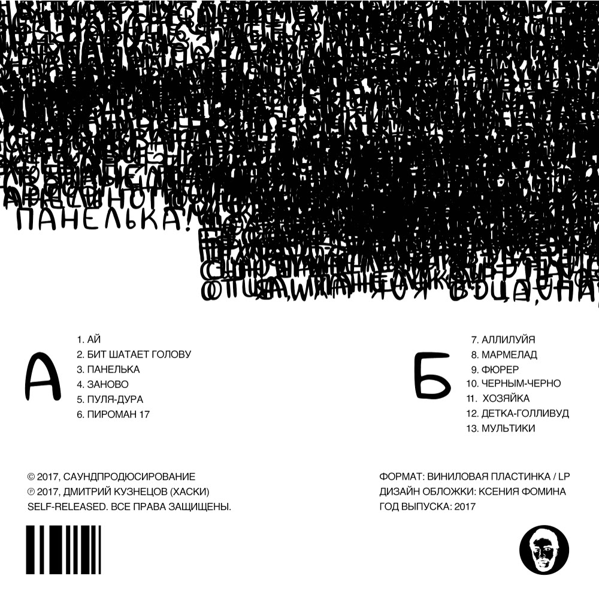

Обложка винила для альбома Хаски «Любимые песни (воображаемых) людей»

О проекте
Обложка виниловой пластинки, где шрифт становится главным инструментом образа. Проект показывает типографику как основное средство визуальной коммуникации и умение минималистичными средствами передать глубину смысла.
«Любимые песни (воображаемых) людей» — мрачный и поэтичный альбом рэп-исполнителя Хаски о жизни «маленького человека» в постсоветском пространстве. Пластинка исследует темы нищеты, духовной пустоты и поиска проблеска человечности среди серой реальности.
Задача
Разработать обложку виниловой пластинки, используя только шрифт. Визуальное решение должно передавать смысл и эмоциональную глубину альбома.
Концепция
Дом на обложке — символ пространства, в котором живёт лирический герой. Фон заполняют строчки песен, формирующие основной силуэт. Простота образа контрастирует с глубиной содержания и отражает главную идею пластинки: поиск человечности и смысла среди серой реальности.
Рукописный шрифт придаёт обложке эффект личного высказывания.
Что сделано
- Лицевая сторона обложки
- Оборотная сторона обложки
- Этикетки A-side и B-side

